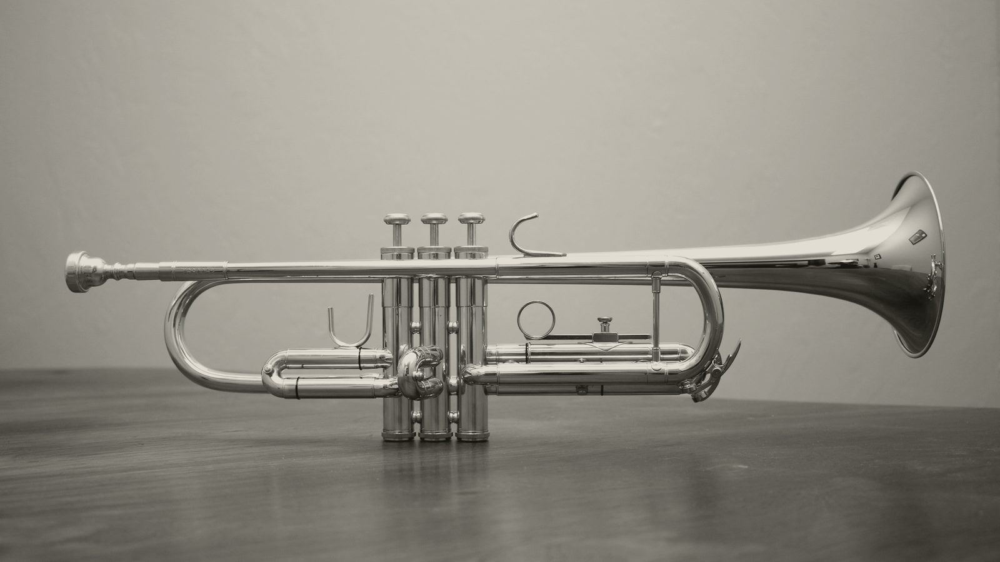

CORPORATE
Playing around a program
A gala runs on a document with eleven things in a fixed order. What the band does around remarks, an award, an auction and a video package, and who calls each one.

- A corporate evening runs on a run of show. The band's job is scheduled against that document, the same as catering and AV.
- The music lands before the speaker reaches the microphone, so nobody stands at the side of the stage waiting for a song to end.
- Every program moment needs one person who calls it, agreed at sound check rather than discovered at 8:40.
- Dinner volume is a decision somebody makes in advance and writes into the run of show.
A wedding reception has a shape most of the guests already know. People can feel what comes next even when they have not seen the timeline.
A gala does not work that way. There is a document, it is usually called the run of show, and it exists because eleven things have to happen in a specific order in front of three hundred people who are also eating. The chief executive speaks. An award goes out to four recipients whose names are on a card somebody printed that afternoon. A video plays. An auctioneer works the crowd for eighteen minutes. Somewhere in there, the dancing is supposed to start.
Bands mostly treat that document as somebody else’s problem. They arrive, they play their sets, they stop when a person in a headset waves at them. That is the part worth changing.
The band is on the run of show or it is in the way #
We ask for the run of show the week before, and we rehearse against it. The transitions get most of that attention, because transitions are where an evening breaks.
What that buys you is specific. The bandleader knows the award presentation follows the salad course rather than the entrée, so the set before it is built to end rather than to be cut off. Whoever holds the run of show on the night has the bandleader’s cell, so when the program slips twelve minutes they can say so directly, instead of routing it through a venue captain, an AV lead and a member of your staff who is holding two plates.
Remarks #
The music ends before the speaker reaches the microphone. That sounds like a small distinction until you have watched the other version, where the band plays out the last eight bars of a song while your chief executive stands at the side of the stage with a card in their hand, waiting, in front of everybody.
So the band lands the song early and the crowd goes quiet before the walk starts. Then silence through the remarks. Then music again when the applause starts, which is a cue the band can hear without anybody signalling it.
An award #
An award presentation is a sequence of short cues rather than one long one, and the number of cues equals the number of recipients. Each one wants a few bars to walk in on and a clean ending under the applause.
The thing that makes this work is agreeing, at sound check, on one person who signals the next recipient. Usually that is the emcee. Occasionally it is whoever is running the deck, because the name on the screen changes before the person moves. What matters is that it is decided in the afternoon by people looking at each other, rather than at 8:40 by people looking for each other.
| Moment | What the band does | Who calls it |
|---|---|---|
| Dinner | Conversation volume, instrumental, no vocal over the tables | Bandleader, against the run of show |
| Remarks | Silence, landing the song before the speaker walks | Whoever holds the run of show |
| Award walk-on | A short cue per recipient, ending under the applause | Emcee, agreed at sound check |
| Auction | Silence through bidding, music on the hammer | Auctioneer |
| Video package | Muted, house audio takes over | AV vendor, agreed before doors |
| Dancing | Loud, read song by song | Bandleader |
An auction is a different problem #
An auctioneer needs the crowd’s whole attention and complete silence, and then needs it again eleven times. That part is straightforward. Everybody understands that you do not play under bidding.
The harder part comes after. A crowd that has just spent twenty minutes concentrating, bidding against colleagues and doing arithmetic about money comes out of it quiet and slightly tired, having spent its attention on something other than the party. Starting a dance set into that quiet is a different job from starting one after dinner, and a band that treats them alike will lose the floor for half an hour and then blame the crowd.
It gets handled by building back rather than opening loud. That is a judgement made in the moment, by somebody watching the floor, which is the argument for a bandleader reading song by song instead of a set list printed on Tuesday.
The video package, and the handoff nobody owns #
A video package is the moment where two sound systems are in the same space and only one of them should be making noise. The band mutes, house audio takes over, and the handoff happens on a cue.
This is the single most common place for an evening to go audibly wrong, and the cause is almost always that the band and the AV vendor never spoke. They are usually two different companies who met that afternoon. Settle it before doors: whose desk the video audio runs through, who mutes what, and who gives the cue. It takes four minutes at sound check and it removes the failure mode entirely.
Volume is a program element #
Dinner and networking sit at conversation volume, which means people at a round table of ten can talk to each other without leaning in. The night gets loud later, when loud is the point.
That shift is scheduled, the same as the courses are. It is worth naming it in the run of show, because “the band was too loud” is nearly always a description of the wrong volume at the wrong hour rather than a description of the band. If your event has a window where a sponsor needs to be able to hold a conversation, put it in the document and it will be honoured.
What this looks like when it works #
Nobody at the party notices any of it. The chief executive walks into silence. The award recipients each get their eight bars. The auctioneer gets silence and then gets it back. The video plays without a squeal of two systems arguing.
Then the band starts the dance set and three hundred people who have been sitting since seven get up at once, and for the rest of the night the only thing anybody remembers about the program is that it went well.